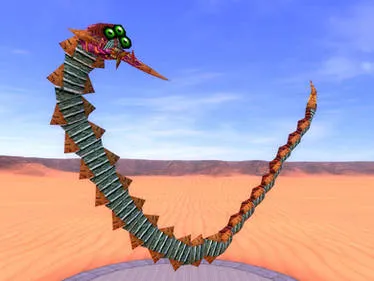
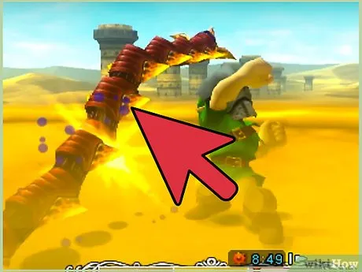
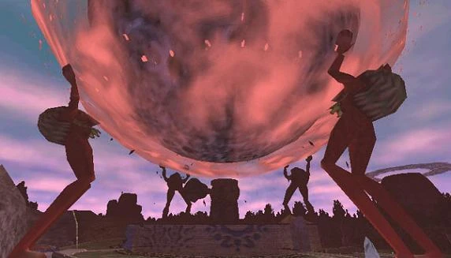

¿Cómo Derrotar a Twinmold?
Para derrotar a Twinmold, Link debe usar la Máscara del Gigante, que lo convierte en gigante y le permite golpear sus colas, el punto débil de ambos enemigos.
Sin embargo, al usar esta forma no puede fijar el objetivo con el botón Z, y la magia se consume constantemente. En el desierto es difícil encontrar energía mágica,
por lo que debe aprovechar los momentos en que los Twinmold destruyen pilares o dejan botellas de magia. Si Link se aleja demasiado, caerá por la arena y será enviado al inicio del templo,
teniendo que rehacer el camino hasta el jefe. Una vez derrotados los Twinmold, Link conocerá al último de los Cuatro Gigantes.

Que Obtendremos tras haberlo Derrotado?
Último de los Cuatro Gigantes
Al derrotar a Twinmold, Link libera al cuarto Gigante, completando así el grupo necesario para detener la caída de la Luna.
Contenedor de Corazón, Como con todos los jefes principales, obtienes un Contenedor de Corazón, aumentando permanentemente tu vida máxima.
Máscara del Jefe (Máscara de Twinmold), Si has purificado el templo por completo y derrotas a Twinmold, podrás teletransportarte directamente al jefe en futuras visitas usando la máscara del jefe correspondiente
Acceso a la Batalla Final contra Majora, Una vez derrotados los cuatro jefes (Odolwa, Goht, Gyorg y Twinmold) y liberados los Cuatro Gigantes, podrás avanzar hacia el evento final en el Reloj del Pueblo durante la noche del tercer día, accediendo finalmente a la Luna, donde se encuentra el combate final.
